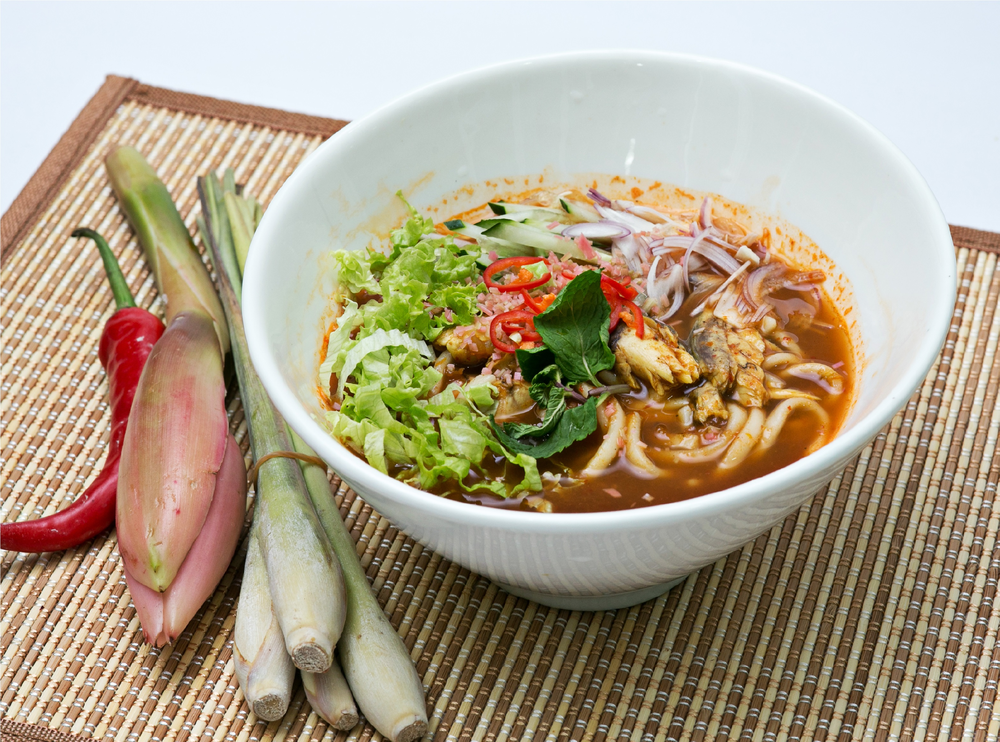

Penang Laksa
A tangy and flavorful noodle soup that I absolutely love. The sour tamarind-based broth, combined with mackerel, fresh herbs, and rice noodles, creates a unique and refreshing taste. It’s a dish that perfectly balances savory and sour flavors.

Pan Mee
A hearty and comforting noodle dish that I enjoy for its simplicity and flavor. The combination of chewy noodles, savory minced pork, crispy anchovies, and fresh spinach is incredibly satisfying. It’s a dish I crave whenever I want something warm and wholesome.